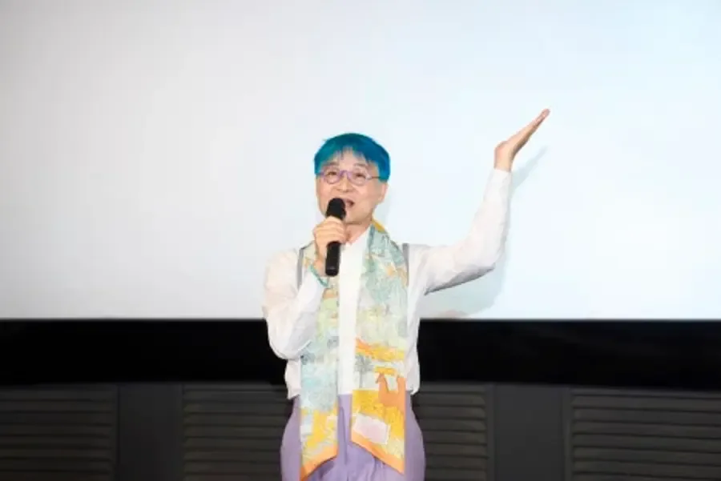
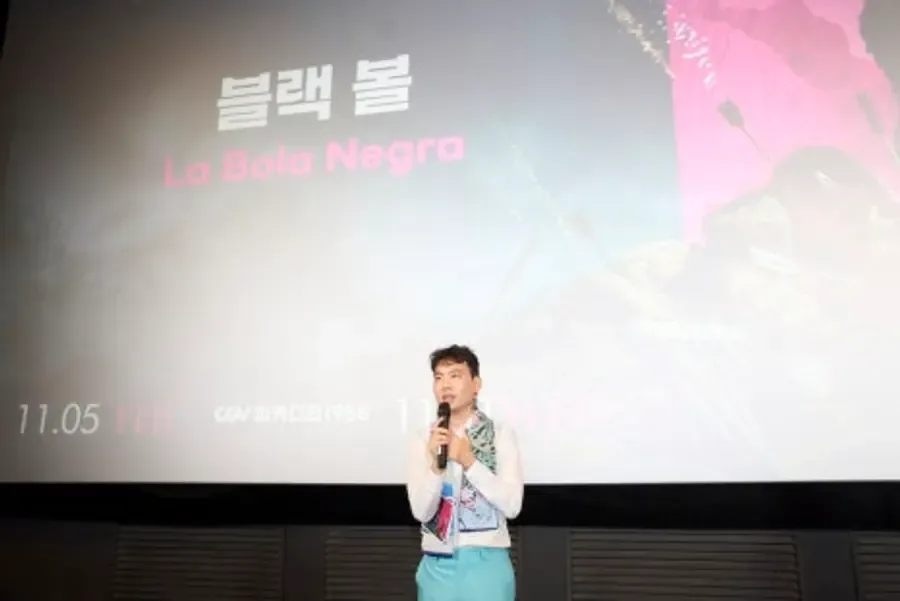
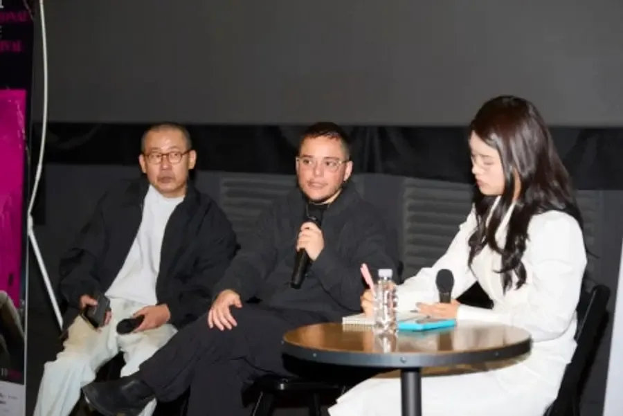
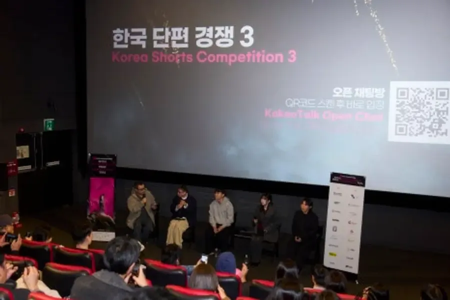
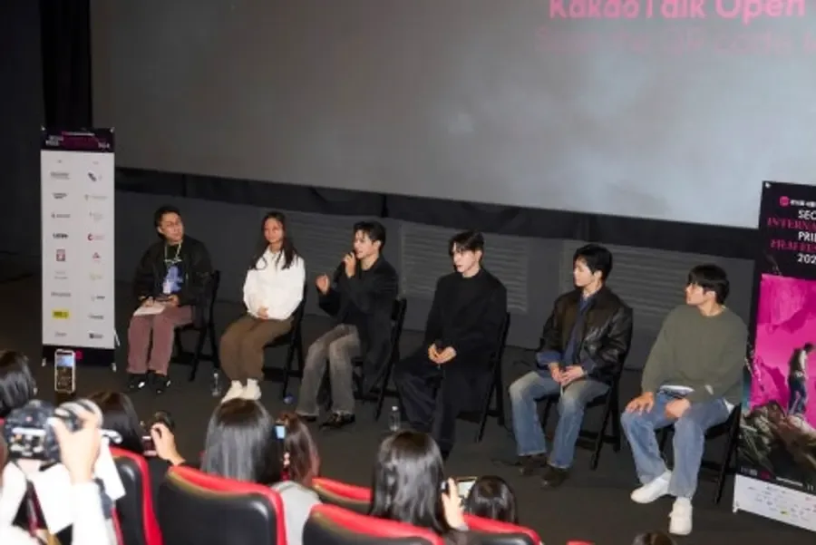
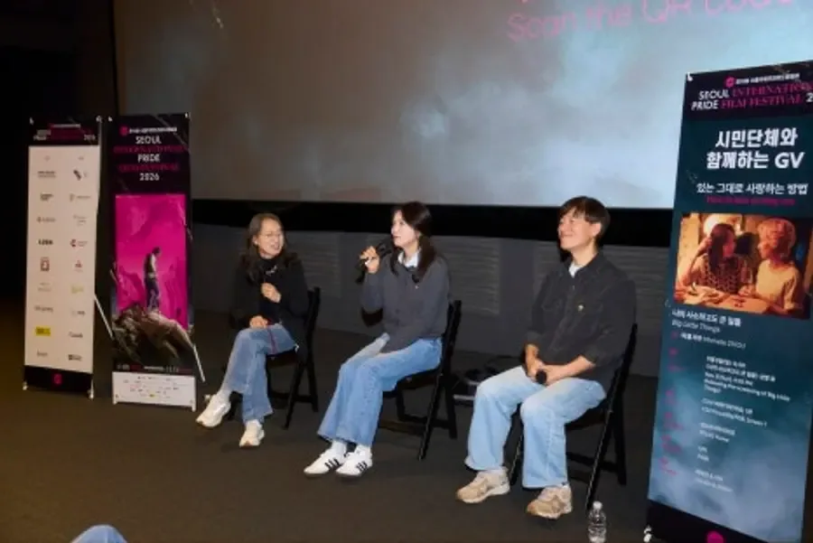

제16회 서울국제프라이드영화제(SIPFF, 집행위원장 김조광수)가 화제작 매진 행렬 속에 국제공동제작 포럼과 프라이드 볼, HIV/AIDS/PrEP 포럼, 20여 차례의 GV를 잇달아 열었다. 이를 통해 상영을 넘어 제작과 연대, 커뮤니티를 잇는 영화제로서의 역할을 확인했다.
전 세계 퀴어영화의 최전선을 만나볼 수 있는 우리나라 최대의 퀴어영화 축제, 서울국제프라이드영화제는 지난 11월 5일(목) 저녁 7시 CGV 피카디리1958에서 열여섯 번째 막을 올렸다. 개막식에는 김조광수 집행위원장과 김승환 프로그래머를 비롯해 훌리오 에라이스 에스파냐 주한스페인대사, 라파엘 부에노 주한스페인문화원장, 주한프랑스대사관 관계자, 〈이반 앤 하둠〉으로 한국을 찾은 이안 데라 로사 감독 등 국내외 인사들이 참석해 자리를 빛냈다. 올해 경쟁부문과 '프라이드 필름 프로젝트'의 심사를 맡은 심사위원들도 함께해 의미를 더했다.
무대에 오른 김조광수 집행위원장은 "첫 회에 상영한 영화가 서른 편이 채 되지 않았는데, 이제 34개국에서 온 116편을 상영하는 큰 영화제가 됐다"며 "여기 계신 많은 분들의 도움 덕분"이라고 감사를 전했다. 이어 "올해는 지원금이 줄어 어려움이 많았지만, 스태프들이 열심히 일해준 덕분에 생각했던 것보다 더 좋은 영화제, 더 다양한 작품을 상영하는 영화제를 만들 수 있었다"며 스태프와 후원·협찬 기관에 고마움을 표했다. 그는 “7일 동안 자주 오셔서 좋은 영화를 마음껏 즐겨 달라”고 당부한 뒤 제16회 서울국제프라이드영화제의 개막을 힘차게 선언했다. 영화제일정 확인


개막을 선언하는 김조광수 집행위원장(왼)과 개막작 〈블랙 볼〉을 소개하는 김승환 프로그래머 ©SIPFF
종로에서 두 번째 해를 맞은 올해 영화제는 일찍이 매진된 개막작 〈블랙 볼〉을 시작으로 〈겁쟁이〉〈로즈〉〈짐 퀸〉 등 주요 화제작이 잇따라 매진됐다. 전 세계 34개국 116편의 상영작 가운데 30편은 세계 최초로 공개됐다. 칸영화제 감독상 수상작 〈블랙 볼〉, 남자연기상 수상작 〈겁쟁이〉, 주목할 만한 시선 심사위원상 수상작 〈안개 속의 코끼리〉가 서울 관객과 만났다. 베를린영화제 테디상 최우수 장편영화상 수상작 〈이반 앤 하둠〉도 상영됐다.


제16회 서울국제프라이드영화제 GV 현장 ©SIPFF
영화제 기간 국내외 감독과 배우, 평론가가 함께한 GV는 20여 차례 열렸다. 〈이반 앤 하둠〉의 이안 데라 로사 감독이 내한해 관객과 만났고, 한국 단편 경쟁·비경쟁 부문 여덟 차례의 묶음 상영 후에도 GV가 이어졌다. 액팅그룹, 청소년 성소수자 지원센터 띵동, 무지개행동, 로뎀나무그늘교회, 성소수자부모모임, 한국게이인권운동단체 친구사이·RUN/OUT 등 성소수자 인권·커뮤니티 단체와 함께한 연대 GV는 여섯 차례 진행됐다. 연대 GV는 스크린 속 이야기를 오늘 한국 성소수자의 삶과 잇는 자리가 되었다.
11월 7일(토)에는 국제공동제작 활성화 포럼 '한국영화의 다음 가능성, 국제공동제작'이 열렸다. (사)신나는센터와 한국영화프로듀서조합(PGK)이 주최하고 영화제가 주관한 포럼이다. 영화사 빅토리픽쳐스 한진 대표가 사회를 맡았고, 주한프랑스대사관 문화과 아가트 뱅송 영상교류 담당관, 영화사 인디스토리 곽용수 대표, 영화사 아드레날린픽쳐스 박준호 대표가 패널로 참여했다. 포럼은 투자 위축과 극장 관객 감소 속에서 제약이 큰 한국 퀴어영화가 국제공동제작으로 나아갈 길을 모색했다.
영화진흥위원회의 ‘2026년 영화 국제공동제작 시범사업'과 프랑스 등 국가별 지원제도를 현장의 성과로 잇는 방안도 논의됐다. 2013년부터 '프라이드 필름 프로젝트'로 국내 퀴어 단편 제작을 지원해온 영화제가 그 시야를 국제공동제작으로 넓힌 자리다. 영화제는 한국-프랑스 수교 140주년을 맞아 프랑스 퀴어영화와 프랑스가 공동제작으로 참여한 장편 7편, 프랑스 단편 6편 등 총 13편을 함께 선보였다.
같은 날 열린 HIV/AIDS/PrEP 포럼 '같은 바이러스, 다른 낙인: 팬데믹을 지나온 HIV의 오늘'은 1980년대 에이즈 위기를 다룬 네덜란드 영화 〈다운타운〉 상영과 함께 진행됐다. 포럼은 치료와 예방이 가능해진 지금도 HIV에만 남아 있는 사회적 낙인을 짚었다. 청소년 성소수자 지원센터 띵동 정민석 이사장이 사회를, 사단법인 함께서봄 권주성 이사장 직무대행이 축사를 맡았다. 패널로는 정성조 중앙대 강사, 순천향대 감염내과 김태형 교수, 길리어드 신지원 상무, 질병관리청 유정희 과장이 참여했다. 커뮤니티와 의료, 공급자, 정부의 관점에서 HIV 낙인 해소와 예방 접근성 확대를 위한 사회적 과제를 함께 모색했다.
11월 8일(일)에는 CGV 피카디리1958 2관에서 '프라이드 볼(PRIDE BALL)'이 다큐멘터리 시리즈 〈볼룸〉과 연계해 열렸다. 프라이드 볼은 신나는센터가 2024년부터 서울프라이드엑스포를 통해 한국에서 활동하는 볼룸 피플(댄서, 디렉터, DJ)과 함께 운영해온 행사로, 올해 처음 영화제 무대에 올랐다. 가정에서 쫓겨난 성소수자 청소년들이 '하우스'라는 대안 가족 안에서 만들어온 볼 문화의 의미를 무대 위에서 관객과 나눴다.
또한 ‘2026 프라이드 필름 프로젝트' 공개 피칭에서는 〈멀리 뛰기〉(정수진), 〈사월초파일〉(김소현), 〈저주 선인장〉(오소진) 세 편이 기획을 선보였다. 지난해 선정작 〈로우 미〉(김재훈)는 올해 월드 프리미어로 관객과 만났다. 신인 감독을 발굴하고 그 작품을 다시 영화제에서 선보이는 선순환을 이어간 것이다.
한국 퀴어영화를 기록하는 작업도 이어갔다. 영화제는 2018년 〈사방지〉를 시작으로 한국영상자료원과 고전 한국 퀴어영화를 디지털로 복원해 왔다. 올해는 한지승 감독의 〈찜〉(1998)과 이진석 감독의 〈체인지〉(1996)가 복원되어 다시 관객과 만났다. 영화제 개막에 맞춰 지난 4년의 한국 퀴어영화를 비평과 인터뷰로 정리한 『한국퀴어영화사 2022-2025』가 출간되었다. 이를 기념하며 〈3670〉〈공작새〉〈그 여름〉, 〈너와 나〉〈럭키, 아파트〉〈꿈을 꾸었다 말해요〉 여섯 편의 출간기념 특별상영이 열렸다.


제16회 서울국제프라이드영화제 GV 현장 ©SIPFF
올해 영화제에는 8개국 대사관·문화원을 비롯한 24곳의 협찬·후원사가 함께했다. 개막식에는 훌리오 에라이스 에스파냐 주한스페인대사와 라파엘 부에노 주한스페인문화원장 등이 참석했다. 서울국제프라이드영화제는 아시아-태평양 프라이드영화제 연맹(APQFFA)의 창립 멤버로서 아시아-태평양 퀴어영화의 허브 역할을 이어가고 있다.
한편, CGV 피카디리1958에서 전 세계 34개국 116편의 퀴어영화를 소개한 연대의 장 제16회 서울국제프라이드영화제는 11월 11일(수) 폐막식과 폐막작 〈이상 가족〉 상영을 끝으로 7일간의 여정을 마무리했다.